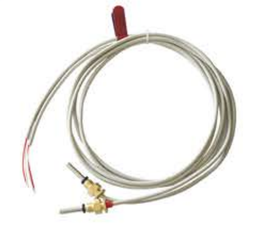
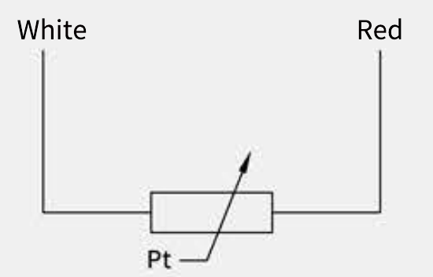
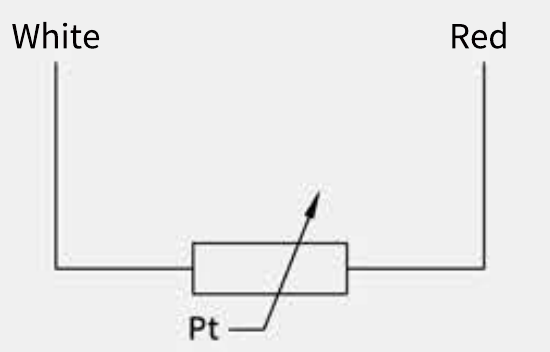

Temperature sensors
for heat meters.
Matched Pt500 or Pt1000 sensor pairs for building heating and cooling. Choose a model to view its specifications.
TM1101/51-5-1500
A fast-response sensor with a stepped stainless steel tube and PVC, PU, or silicone cable options.
TM1101-5-1500
A standard heat meter sensor with a straight stainless steel tube and PVC or silicone cable options.


Technical data
| Application | Building temperature measurement · heating / refrigeration |
|---|---|
| Sensing element | Pt500, Pt1000 (optional)IEC 751, as referenced in the brochure. |
| Measurement range | 0–105 °C / 0–150 °CRange options; confirm the required configuration. |
| Matching accuracy | ±0.06 °C · refrigeration ±0.1 °C · heating |
| Minimum temperature difference | 2 K · refrigeration 3 K · heating |
| Thermal response time | t₀.₅ ≤ 2.0 sAt ambient temperature; 25 °C temperature step; water flow velocity 0.8 m/s. |
| Product standards | GB/T 32224-2020 · EN 1434-2015Designations as printed in the source brochure. |
Matching accuracy describes the sensor pair, not the overall accuracy of a complete heat meter.
| Application | Building temperature measurement · heating / refrigeration |
|---|---|
| Sensing element | Pt500, Pt1000 (optional)IEC 751, as referenced in the brochure. |
| Measurement range | 0–105 °C / 0–150 °CRange options; confirm the required configuration. |
| Matching accuracy | ±0.06 °C · refrigeration ±0.1 °C · heating |
| Minimum temperature difference | 2 K · refrigeration 3 K · heating |
| Thermal response time | t₀.₅ ≤ 3.0 sAt ambient temperature; 25 °C temperature step; water flow velocity 0.8 m/s. |
| Product standards | GB/T 32224-2020 · EN 1434-2015Designations as printed in the source brochure. |
Matching accuracy describes the sensor pair, not the overall accuracy of a complete heat meter.
| Thread connection | M10 × 1 |
|---|---|
| Stepped protective tube | Ø3.7 × 10 – Ø5 × 45 mm |
| Protective tube material | SUS316L stainless steel |
| Nominal pressure | PN25 |
| Protection class | IP68 |
The brochure does not provide a dimensioned manufacturing drawing or tolerances. Confirm insertion depth and the installation dimensions for your selected model.
Request the dimensional drawing →| Thread connection | M10 × 1 |
|---|---|
| Protective tube | Ø5 × 45 mm |
| Protective tube material | SUS316L stainless steel |
| Nominal pressure | PN25 |
| Protection class | IP68 |
The brochure does not provide a dimensioned manufacturing drawing or tolerances. Confirm insertion depth and the installation dimensions for your selected model.
Request the dimensional drawing →| Wiring | 2-wire · white / red |
|---|---|
| Cable material | PVC / PU / silicone |
| Cable diameter | Ø4.2 mm |
| Cable length | Confirm the required length with Bocon. |
| Insulation resistance | R ≥ 100 MΩAt room temperature, 100 V DC. |
Cable, element, and range options are listed separately in the brochure. Confirm the combination required for your application.

| Wiring | 2-wire · white / red |
|---|---|
| Cable material | PVC / silicone |
| Cable diameter | Ø4.2 mm |
| Cable length | Confirm the required length with Bocon. |
| Insulation resistance | R ≥ 100 MΩAt room temperature, 100 V DC. |
Cable, element, and range options are listed separately in the brochure. Confirm the combination required for your application.

Downloads
TM1101/51-5-1500 · printed page P6
Open brochure ↗
TM1101-5-1500 · printed page P5
Open brochure ↗
Qualification documents
The brochure describes both models as “MID approved”. Request the current certificate and scope for the configuration you intend to qualify.
Discuss this sensor
Share your temperature range, cable requirements, and number of sensor pairs.
Explore the heat-metering application →